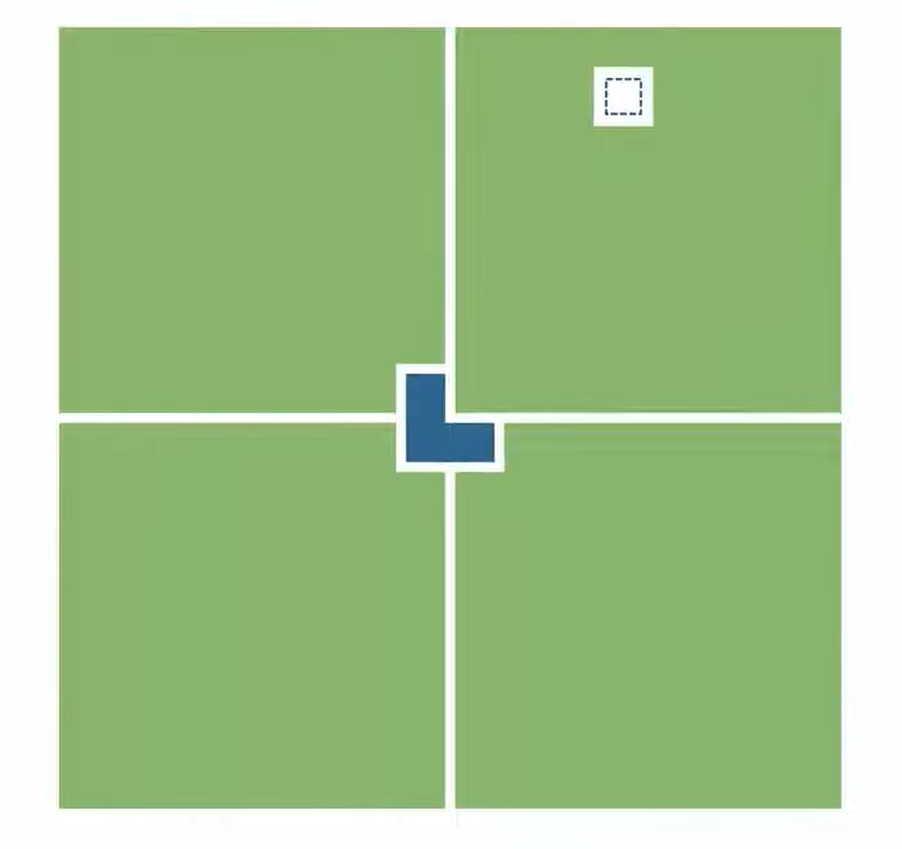
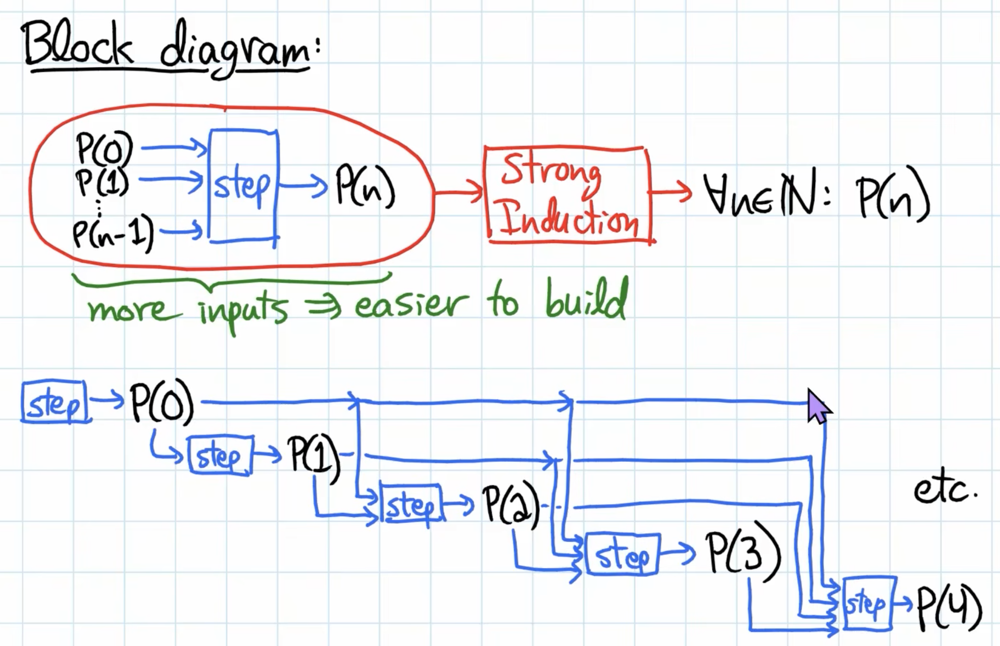

Contradiction and Induction¶
Course source: 6.1200J Lecture 02-03
Logical Deduction¶
An inference rule is a rule for combining true propositions to form other true propositions.
We can quickly verify an inference rule using truth table.
| Rule | Meaning |
|---|---|
| \(((P \implies Q) \space \text{AND} \space P) \implies Q\) | If \(P\) implies \(Q\), and \(P\) is true, then \(Q\) must be true. |
| \(((P \implies Q) \space \text{AND} \space \text{NOT}\space Q) \implies \text{NOT} \space P\) | If \(P\) would imply \(Q\), but \(Q\) is false, then \(P\) must be false. |
| \(((P \implies Q) \space\text{AND}\space (Q \implies R)) \implies (P \implies R)\) | If \(P\) would imply \(Q\), and \(Q\) would imply \(R\), then \(P\) must implie \(R\). |
| \(((\text{NOT} \space P) \implies \text{FALSE}) \implies P\) | If assume Not \(P\) leads to a contradiction, then \(P\) must be true. |
Example: \(P \implies Q\): If it rains, the ground gets wet.
When write a proof:
- Each step in a proof should be clear and logical.
- You should state which previously proved propositions are being used.
- Please do not make wild leaps of faith.
- Please do not use “Proof by Intimidation” (obvious, Clearly etc)
- But we are not picky about which inference rules you use, and there is certainly no need to cite an inference rule at every step.
Proof Outlining¶
This outlining step can often be started nearly mechanically, based on the form of the theorem being proved and the chosen proof techniques.
- Choosing a proof method can lead to immediate and noticeable progress on constructing the proof.
- Break down a proof into smaller tasks precisely,and tackle these tasks one at a time.
- Consider multiple possible approaches to a problem before deciding which one(s) to pursue.
A common proof-writing mistake is to dive into how to prove something, while not realizing that you’re trying to prove the wrong thing! Spending a bit of time identifying what needs to be proved, likely using our common proof techniques, will ensure that your “how to prove”-energy is directed at the correct targets.
Fundamental Proof Techniques¶
| Proof Techniques | Therom (to be proved) |
How to Prove | Write Proof |
|---|---|---|---|
| Prove Something Exists by example | \(\exists x \in S. P(x)\) | choose a specific example \(x^*\), prove \(P(x^*)\) | We’ll show that the value x = [some specifc values] works. \(\exists x \in S\) because [reasons], for this choice of x, P(x) is true because [reasons]. |
| Prove sometthing is Universal (for all) | \(∀x ∈ S. P(x)\) | choose a general variable for arbitrary \(x\), prove \(P(x)\) | Assume \(x\) is an arbitrary element of \(S\). Then we want to show \(P(x)\) is true because [reasons]. |
| Prove Implication by Direct Proof | $ P \implies Q $ | assume the condition \(P\), prove \(Q\) | Assume \(P\) is true, then want to show \(Q\) is also true, because [reasons (probably using that assumption)] |
| Prove Implication by Contrapositive | $ P \implies Q $ | asssume \(\text{NOT} \space Q\), prove \(\text{NOT} \space P\) Reason: $ P \implies Q $ is equivalent to its contrapositive \(\text{NOT} \space Q \implies \text{NOT} \space P\) |
We’ll prove the contrapositive, so assume \(\text{NOT} \space Q\) is true. Then we want to show \(\text{NOT} \space P\) is true because [reasons]. |
| Prove anything by Contradiction | \(P\) (not assuming a specific form of theorem) |
Assume \(\text{not}\space P\), prove \(\textbf{false}\). Reason: By our inference rule $((\text{NOT} \space P) \implies \text{FALSE}) \implies P $, this is a valid proof of \(P\). |
For the sake of contradiction, assume \(P\) is false, .... The other statement \(R\) is both true and false (inconsistant), which is contradiction (, so our assumption is wrong, so \(P\) is true.) |
| Universal over natural number by regular Induction | \(\forall n \geq 0. P(n)\) | Check base case \(P(0)\) then for \(\forall n \in \mathbb{N}, n\geq 0\) show \(P(n) \implies P(n+1)\) | - Let \(P(n)\) be the predicate [make it concret \(P(n)\):= ...] We prove \(\forall n \in \mathbb{N}. P(n)\), by induction on \(n\). (see note below) - Base case, must show \(P(0)\) is true: Left hand side (LHS) is [value], right hand side (RHS) is [value], so ... - Inductive step: Let \(\forall n \in \mathbb{N}\), and assume \(P(n)\) is true; we must show \(P(n + 1)\). |
| Universal over natural number by Strong Induction | \(\forall n \geq 0. P(n)\) | 1. Split the problem into a few parts (size < n) 2. Check base case \(P(0)\) 3. Recursively solve these smaller problems \(P(i)\) (where \(i < n\)) by using strong induction. 4. Combine the solutions. |
- Let \(P(n)\) be the predicate [make it concret \(P(n)\):= ...] We prove \(\forall n \in \mathbb{N}. P(n)\), by strong induction on \(n\). - Base case, must show \(P(0)\) is true. - Inductive step: Let \(\forall i < n, i \in \mathbb{N}\), and assume \(P(i)\) is true; we must show \(P(n)\) is true. |
| Prove by Exhaust All Possible Cases | \(P\) is true | Come up a proposition \(C\), which makes the following a tautology (always true) \(C1 \lor C2 \lor ... \lor Ck\). |
Proof by cases: - Case 1: Assume \(C_1\) is true. Then P is true because [reasons]. - Case 2: Assume \(C_2\) is true. Then P is true because [reasons]. ... - Case k: Assume \(C_k\) is true. Then P is true because [reasons]. ... These k cases are exhaustive (i.e., \(C1 \lor C2 \lor ... \lor Ck\) is a tautology) because [reasons] |
Proof by Induction¶
Induction is probably the most common and most powerful proof technique in computer science.
Intuition: like Dominoes / chain¶
| Knows all these | Want to prove all these |
|---|---|
| \(P(0)\) | \(P(0)\) |
| \(P(0) \implies P(1)\) | \(P(1)\) |
| \(P(1) \implies P(2)\) | \(P(2)\) |
| \(P(2) \implies P(3)\) | \(P(3)\) |
| \(P(3) \implies P(4)\) | \(P(4)\) |
| \(P(4) \implies P(5)\) | \(P(5)\) |
| ... | ... |
| \(P(n-1) \implies P(n)\) | \(P(n)\) |
| \(P(n) \implies P(n)\) | \(P(n+1)\) |
| Summary: | |
| \(P(0) \space \text{AND}\space \forall n \in \mathbb{N}, n\geq 0, [P(n) \implies P(n+1)]\) | \(\forall n \geq 0. P(n)\) |
Use Induction Axiom to prove¶
Let \(P(n)\) be a predicate (Induction Hypothesis), defned for \(n \in \mathbb{N}\). If \(P(0)\) and \(\forall n \geq 0.[P(n) \implies P(n+1)]\), then \(\forall n \geq 0. P(n)\)
Note: strengthen the inductive hypothesis¶
Often (but not always!) this \(P(n)\) will be the predicate we initially set out to prove, however sometimes we might need to strengthen the inductive hypothesis using a stronger \(Q(n)\) instead of original \(P(n)\).
Example: \(P(n)\) is the predicate "it is possible to use non-overlapping L-trominoes to cover a \(2^n\) by \(2^n\) square grid, except for one of the center-most squares". \(Q(n)\) is the stronger hypothesis "it is possible to use non-overlapping L-trominoes to cover a \(2^n\) by \(2^n\) square” except for any one square".
Figure: Example of strengthen the inductive hypothesis: Algorithm divide and conquer - Cut the grid into divide and conquerfour quadrants and put a L-trominoes in the middle.

Strong Induction¶
Suppose \(P(n)\) is a predicate with n a natural-number variable. Suppose that
- \(P(0)\) is true.
- \(\forall n \in \mathbb{N}\), it holds that \(IH(n) = P(0) \land P(1) \land . . . P(n) \implies P(n + 1)\).
Then it holds that \(\forall n \in \mathbb{N}, P(n)\)
Note: Strong induction is in fact completely equivalent to regular induction, and the strong induction theorem can easily be proven from the Axiom of Induction by using the regular induction Axioms for the new induction hypothesis \(IH(n)\).
Figure: Strong Induction Intuition - not only assume \(P(0)\) but also assume all the \(P(i)\) is true, where \(i \in \mathbb{N}, i < n\)
